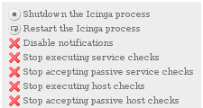

There are different ways to start, stop, and restart Icinga. Depending on your installation, the most common example will be shown... In case of using the init script make sure you have performed
#> make install-init
or
#> make fullinstall
![[Tip]](../images/tip.png) |
Tip |
|---|---|
|
Always make sure you're verified your configuration before you (re)start Icinga. |
Starting Icinga
Init Script: The easiest way to start Icinga is by using the init script:
#> /etc/init.d/icinga start
Manually: You can start Icinga manually launching the daemon mode with the -d command line option:
#> /usr/local/icinga/bin/icinga -d /usr/local/icinga/etc/icinga.cfg
Debugging Mode: In the very rare case that Icinga ends silently without any hints in the various log files you can start Icinga by omitting the daemon option:
#> /usr/local/icinga/bin/icinga /usr/local/icinga/etc/icinga.cfg
This way it is started in the foreground which will lead to a lot of messages scrolling down the screen but it may result in a clue at the very end.
Restarting Icinga
Restarting/reloading is necessary if you modify your configuration files and want those changes to take effect.
Init Script: The easiest way to reload/restart Icinga is by using the init script:
#> /etc/init.d/icinga reload
or
#> /etc/init.d/icinga restart
The difference between the two is that the latter will actually end the Icinga process and start it again. The first rereads the configuration files which is faster but in some cases may not be sufficient.
Web-Interface: You can restart Icinga using the web interface. Click on the "Process Info" navigation link and select "Restart the Icinga Process"

Manually: You can restart Icinga by sending it a SIGHUP signal:
# kill -HUP <icinga_pid>
Stopping Icinga
Init Script: The easiest way to stop Icinga is by using the init script:
# /etc/init.d/icinga stop
Web-Interface: You can stop Icinga using the Web-Interface Click on the "Process Info" navigation link and select "Shutdown the Icinga Process"
Manually: You can stop by sending it a SIGTERM signal:
# kill <icinga_pid>
Logging Options in /usr/local/icinga/etc/icinga.cfg
Logging options for daemon:
If you want messages to be logged to the daemon log file (usually icinga.log). Default option is 1 (yes), the other valid option is 0 (no)
use_daemon_log=0/1
Logging options for syslog:
If you want messages to be logged to the syslog facility, as well as the Icinga log file set this option to 1. If not, set it to 0.
use_syslog=0/1
Miscellaneous options
If you experience long delays between starting Icinga and the first checks you can use several other options which are shown here. How to have a look at the scheduling queue (-S) is described there as well.
© 1999-2009 Ethan Galstad, 2009-2017 Icinga Development Team, https://www.icinga.com